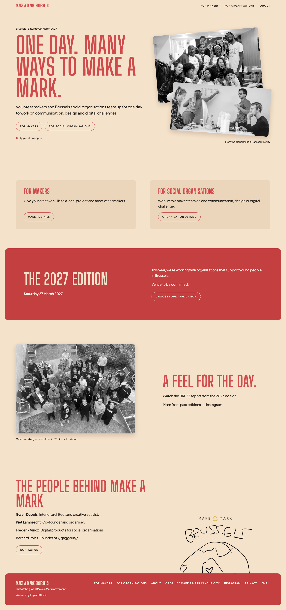

Choose the finishing touches.
Keep the broadsheet. Tighten the rhythm, clarify the links, and give the small interactions the same care as the headline.
Seven independent choices, shown on the real homepage. My suggested first pass is P01, P02, P04 and P06. The other three are matters of taste.
This is a review of the selected distilled homepage. The live templates are unchanged. Proposed images use temporary browser changes, with the site's own CSS, fonts and photography.
Start with the biggest visual improvementThe homepage todayView mobile

Captured from the running local site at 1440px and 390px. Scroll inside, or open the full capture.
Keep the selected direction.
Same headline, section order, two equal audience routes, red and cream palette, self-hosted fonts and monochrome photo reveal. Selection record
Evidence, then judgment.
Measurements and behaviour below are observations. Expected benefits are my design interpretations, not results from user research. Scope estimates assume the current shared components.
Evidence and review boundaries
- Current component CSS supplies spacing, type, interaction and layout evidence.
- Current homepage template, navigation, footer and photo component supply content and route evidence.
- Project design system supplies this artifact's palette, typography and shape language. The product is the design source.
- Owner-selected homepage and Build concerns constrain this review. No process, FAQ or new page is proposed.
- The preview images are real page renders with temporary DOM/CSS overrides. Images are comparisons, not interactive product prototypes. Click any comparison to inspect it full size.